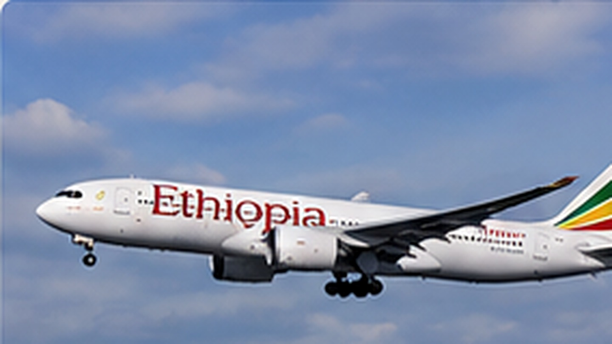

01
Verbindungen vergleichen
Direktflüge und Umsteigeverbindungen nach Reisezeit, Komfort und Ankunftszeit bewerten.
Von der passenden Verbindung bis zum Transfer nach der Landung: Ein klar geplanter Flugablauf sorgt für einen entspannten Start in die Reise.

Übersichtlich, praktisch und auf die Reisevorbereitung ausgerichtet.
Direktflüge und Umsteigeverbindungen nach Reisezeit, Komfort und Ankunftszeit bewerten.
Namen, Flugnummern, Terminal und Zeiten vor Abreise kontrollieren.
Freigepäck und Handgepäck passend zur gebuchten Tarifklasse prüfen.
Transfer, Treffpunkt und erste Adresse in Äthiopien vorab festlegen.
Von der passenden Verbindung bis zum Transfer nach der Landung: Ein klar geplanter Flugablauf sorgt für einen entspannten Start in die Reise.
Ein sinnvoller Ablauf hilft, wichtige Punkte rechtzeitig zu erledigen.
Verbindung nach Reiseplan, Umstieg und Ankunftszeit auswählen.
Check-in, Terminal und mögliche Änderungen kontrollieren.
Gepäck übernehmen und zum vereinbarten Transferpunkt gehen.
Wir können Ihre gewünschte Reise mit sinnvollen Flugzeiten und Transfers koordinieren.